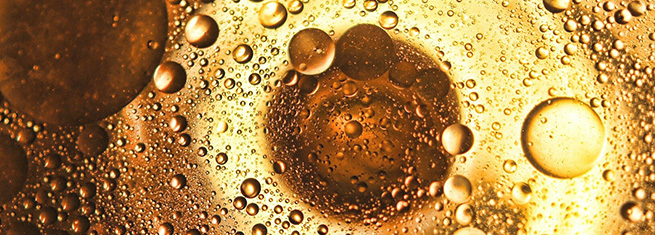

바이오디젤
바이오디젤은 동.식물성유지등을 알코올에 반응시켜 만든 순도 96.5% 이상의 지방산 메틸 에스테를를 말합니다.
-

폐자원재생
에너지 자원의 고갈 문제가 없고, 폐식용유 등 폐자원의 재생 가능합니다. -
배출가스저감
에너지 자원의 고갈 문제가 없고, 폐식용유 등 폐자원의 재생 가능합니다. -
모든차량사용
에너지 자원의 고갈 문제가 없고, 폐식용유 등 폐자원의 재생 가능합니다. -
친환경 에너지
에너지 자원의 고갈 문제가 없고, 폐식용유 등 폐자원의 재생 가능합니다.